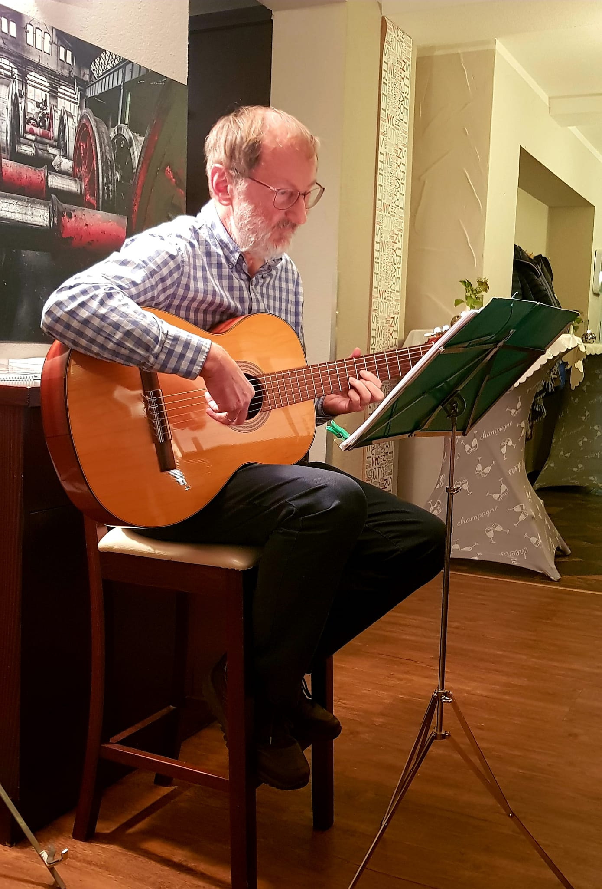
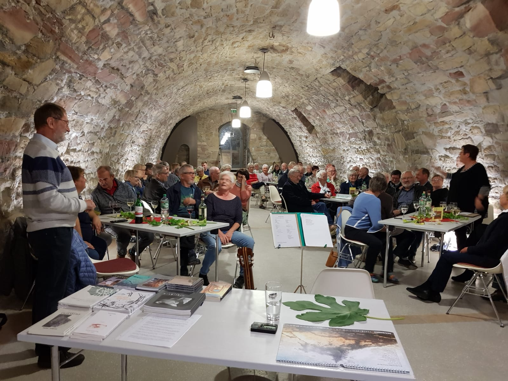
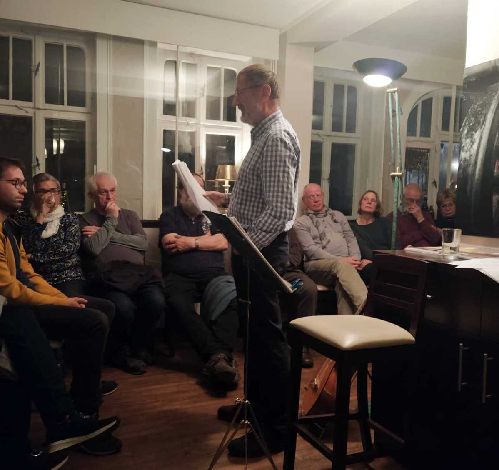

Nach längerer Abstinenz von neuen Programmen und pandemiebedingten Zwangspausen brachte Holger Uske im Herbst 2022 ein neues literarisch-musikalisches Programm heraus. Ausgehend von seinem gewachsenen Repertoire und den neuen Büchern „Die Weltenformel" (2016), „Am Saum der Zeit" (2021) und dem Gedichtband „Windgras" von 2022 stellte er ein zweimal 40-minütiges Angebot aus Gedichten, Erzählungen und Liedern zusammen. Und wie könnte es nach der „Weltenformel" – die Eingang fand – anders heißen als „Weltenwege" … Die Texte entführen in die äußere wie die innere Welt, Landschaften werden gestreift. Immer wieder wird Partnerschaft in vielfältigen Facetten thematisiert. Ernüchterung findet statt, „Zwischen den Frieden" heißt ein Gedicht. Und unter dem Titel „Wege" stellt Uske immer wieder Varianten eigenen Fortkommens vor. Ausgehend vom Licht genießen, an einem Fenster stehend, endet das Programm mit den Gedichtzeilen „… Und mich wundern / Wer ich eben war".
Ein Angebot des Besitzers der Gaststätte „Alte Post" in Suhl-Heinrichs gab den Anstoß für das neue Projekt. Die Verbindung mit einer einstigen Studienkollegin sorgte dafür, dass das Programm am 29. Oktober im Schlosskeller Wiehe seine Erstaufführung erlebte vor etwa 50 interessierten Zuschauern. Partner dafür war der Förderverein des Schlosses Wiehe. Die zweite Aufführung fand – in leicht veränderter Form – dann schon eine knappe Woche später am 4. November im Gastraum der „Alten Post" zu Heinrichs statt, wo etwa 30 Literaturfreunde den literarisch-musikalischen Ausflug verfolgten und damit selbst Teil der Kulturbelebung in dem Suhler Ortsteil wurden. Der Innenhof ist vielen Suhlern noch als Kultur- und Ausstellungsort z.B. für den Heinrichser Hofsommer in bester Erinnerung.
Das Programm kann beim Autor gebucht werden. Es vereint einige der besten Texte der vorangegangenen Jahre und zeugt vom gewachsenen Kunstbewusstsein des Dichters und Liedermachers. Sein jüngster Gedichtband erfuhr in der Ausgabe 2/2022 des Thüringer Literaturjournals „Palmbaum" eine sehr wertschätzende Rezension, ein aktuelles Gedicht des Programms wurde dort auch erstgedruckt. Es gilt eine Einladung, sich selbst seinen „Weltenwegen" zu stellen – bestenfalls mitinspiriert durch Holger Uske.



Holger Uske bei der Aufführung seiner „Weltenwege": links und rechts in Heinrichs, in der Mitte im Schlosskeller Wiehe. Aufnahmen: A. und J. Uske, links H. Krömer
Buchung: Das Programm ist buchbar – Anfragen bitte per Kontaktformular oder an uske.suhl@gmail.com.